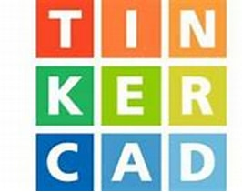
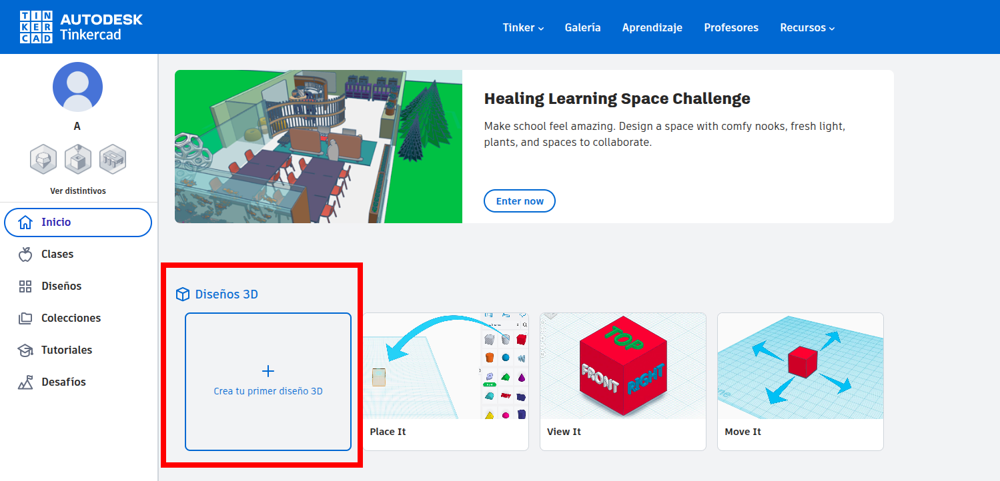
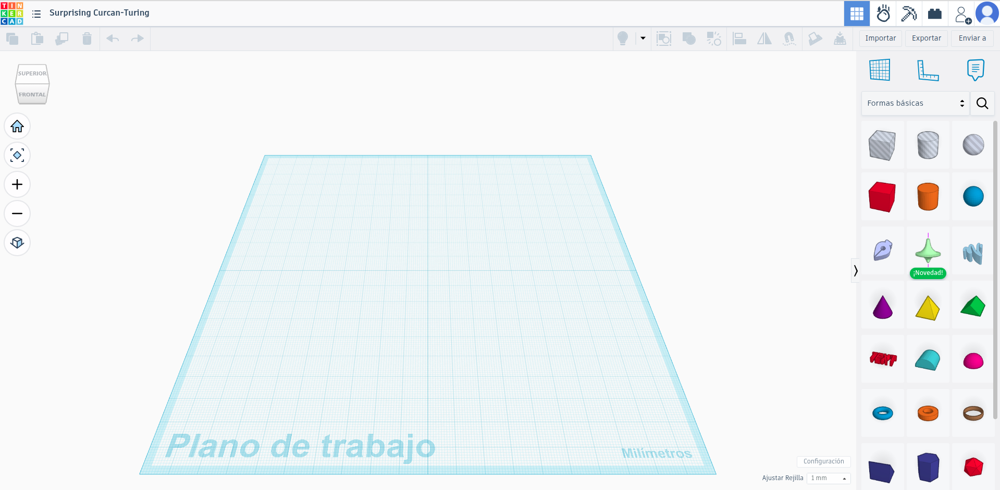
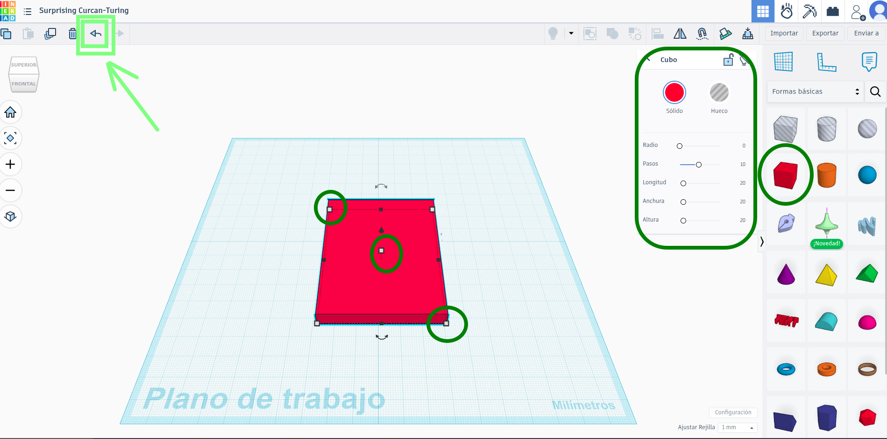
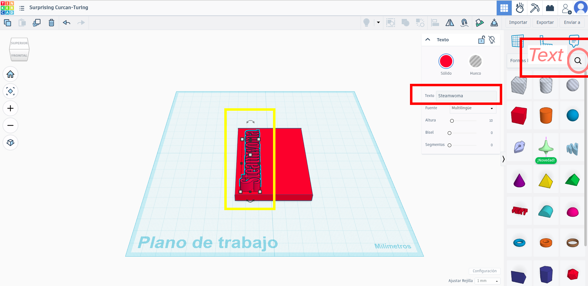
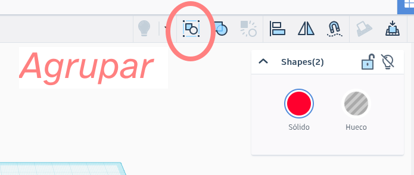
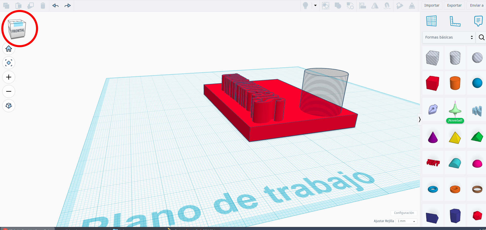

DISEÑO 3D CON TINKERCAD
🧠 ¿Qué vamos a aprender?
En esta actividad aprenderás a diseñar tu primera pieza en 3D usando Tinkercad. Diseñar en 3D es como construir con piezas de LEGO… pero en el ordenador.
-
🚀 Paso a paso

Entra en Tinkercad
Si inicias tu propia cuenta: https://www.tinkercad.com,
En nuestro caso tienes que entrar en una clase https://www.tinkercad.com/joinclass/Q9Z5LNDSL
La profesora te dará un código para matricularte en la clase.
- Crea un diseño nuevo

-
Aprende el entorno
- Elementos importantes:
- 🟦 Plano azul → zona de trabajo
- 📦 Formas → a la derecha
- 🔍 Zoom → rueda del ratón
- 🖱️ Mover → arrastrar con el ratón 
👉 Un llavero con tu nombre
Pasos:
- Arrastra un cubo
- Cambia el tamaño (por ejemplo: 60 x 20 x 5 mm). Si te equivocas usa deshacer (antes de seguir cambiando)

- Arrastra un texto
- Escribe tu nombre
- Ajusta el tamaño del texto
- Colócalo encima del cubo

- Selecciona todo con el ratón y pulsa agrupar

👉Haz el agujero del llavero
- Arrastra un cilindro
- Cámbialo a modo “agujero”
- Colócalo en un extremo
- Agrupa todo
- Puedes cambiar de perspectiva para asegurarte que está todo correcto

💡 Consejos del profe
✔ Usa medidas realistas (en milímetros)
✔ No hagas piezas demasiado finas (mínimo 2-3 mm)
✔ Centra bien las piezas antes de agrupar
⚠️ Errores típicos
❌ Letras flotando (no tocando la base)
❌ Piezas sin agrupar
❌ Diseños demasiado pequeños
Mini reto
Vas a mejorar el llavero:
- En lugar de que el nombre esté solo en una cara, el llavero debe tener información diferente por delante y por detrás.
- Asegúrate de que el agujero para el aro esté a una distancia exacta de 4 mm del borde y que el grosor total no supere los 5 mm. Si el borde es muy fino, el llavero se romperá
- Diseña tu llavero en dos partes que encajen perfectamente como un puzzle. Una pieza debe tener un saliente y la otra un hueco con la misma forma.
- Representa la inicial de tu nombre usando solo pequeñas esferas de 2 mm de alto sobre la base del llavero, como si fuera código o lenguaje Braille